Manipulation that keeps working when the ocean moves.
A grasping policy trained with no underwater teleoperation data at all. 85% in the lab pool. Below 5% in Monterey Bay, because nothing in its state told it the water was pushing. This page is the argument in the order I worked through it.
Two questions this project exists to answer.
Control that knows it is being pushed
How does a plan stay valid once a current has moved the robot?
The grasp is not what broke at Hopkins. Nothing in the robot’s state says the water is pushing, so each new plan inherits the offset the last one had. SAM2 on the camera image, with depth and IMU, supplies the missing state. The plan from there is an MPC fed a disturbance estimate — still being worked out.
Manipulation without underwater demonstrations
Where does the training data come from?
Teleoperating an ROV is slow and expensive, so demonstrations are recorded on land. Depth maps supply the grasp affordance, the affordance drives a self-supervised loop, and the human drops out. The action is now a relative end-effector trajectory — the same form UMI uses, and tied to no particular vehicle.
Underwater data is the bottleneck, not underwater learning.
Prof. Song's group had already shown that an end-to-end visuomotor policy can work under water when it is trained on human teleoperation data. The result held, but only inside tightly controlled experimental conditions.
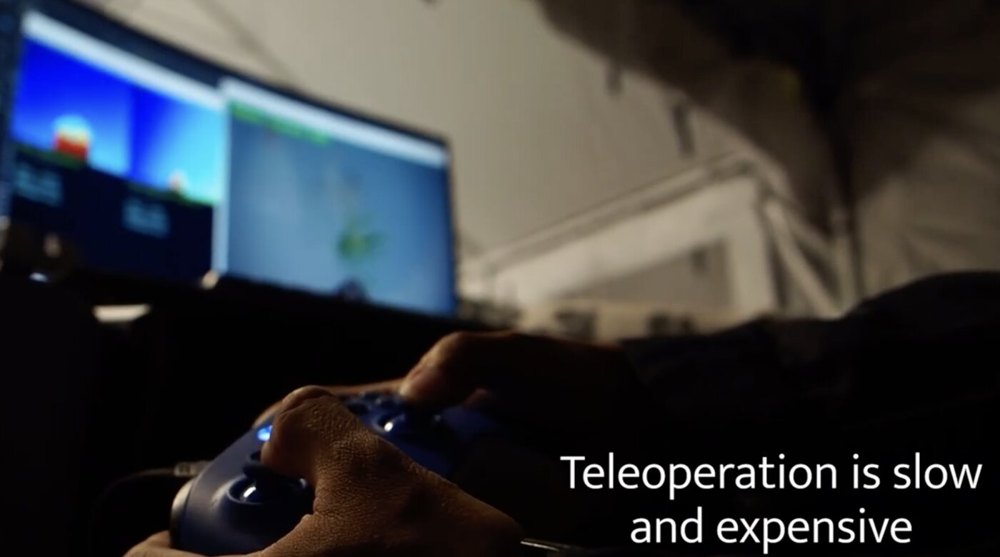
The bottleneck is data. An underwater demonstration means teleoperating an ROV — a pilot, a tether, a pool or a boat — and it buys one demonstration at a time.
So the demonstrations were collected on land instead, where picking an object off a patio table takes a few seconds. That moves the whole difficulty into one place: the gap between what a camera sees in air and what it sees in water.
To an RGB encoder, air and water are two different worlds.
Same can, same viewpoint, same background. Only the medium changes. To a person the two photographs are obviously the same object, and to a vision encoder they are not.
Water shifts color balance, flattens contrast, changes the lighting, and refracts and scatters what is left. The object has not moved, but every pixel describing it has.
To put a number on it I used a DINOv2 encoder. It turns each image into a feature vector; the cosine distance between two vectors says how differently the network sees the two pictures.
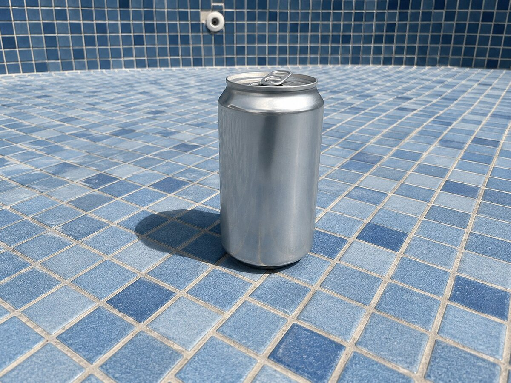
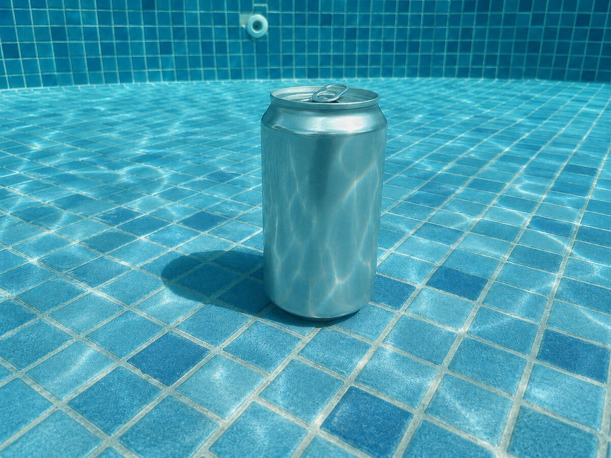
Then convert both images to monocular depth maps with Depth Anything V2 and take the same measurement again.
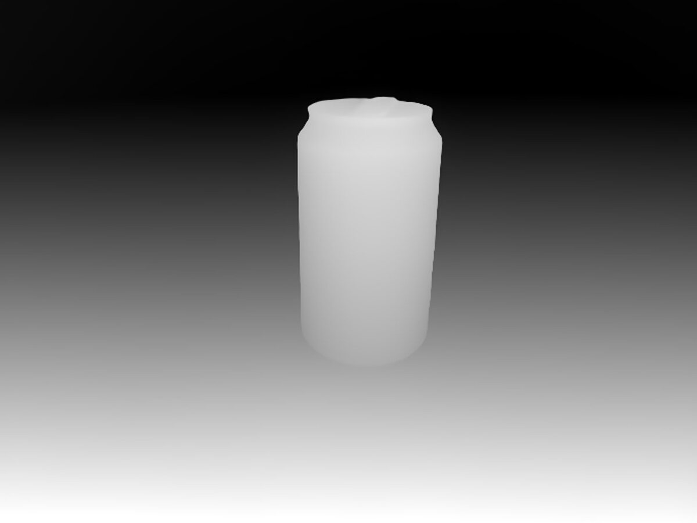
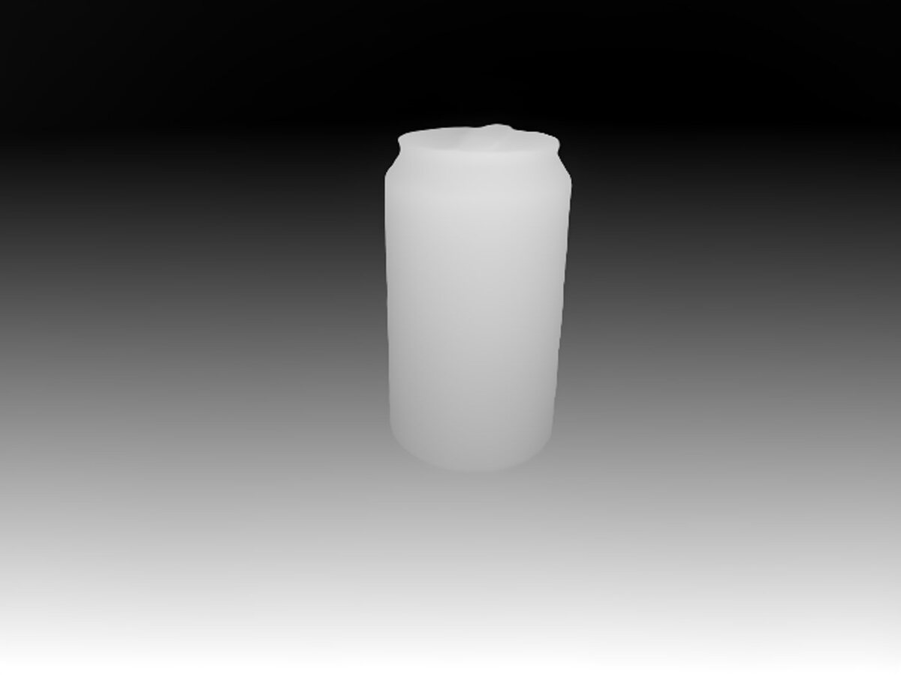
Color is a property of the water. Shape is a property of the object. Once the policy reads geometry, an image taken in air and one taken underwater are nearly the same input — and everything downstream can be trained where the data is cheap.
An affordance-conditioned diffusion policy, trained without underwater teleoperation.
The published pipeline [1] carries the domain gap in the depth map, carries the task in a grasp affordance, and lets the robot collect its own data instead of asking a human to fly it.
Depth first
Depth Anything V2 converts the camera image into a monocular depth map, and every stage after this point works on that map rather than the RGB frame. This is the step that makes data recorded on land usable under water.
An affordance from geometry
A convolutional U-Net takes the depth map (1 × 244 × 244) and predicts a 1 × 112 × 112 affordance map, trained against a goal image with binary cross-entropy. The supervision is a picture of the outcome, not a hand-labeled grasp.
The robot collects its own data
That affordance then drives self-supervised data collection. A PD controller servos the object centroid to stage-specific pixel setpoints and the robot attempts the grasp. This is what removes the need for human teleoperation entirely.
An affordance-conditioned diffusion policy
The policy takes depth, the grasp affordance, and proprioception, meaning the robot command and the IMU. A ViT-B/16 CLIP encoder feeds a 1D U-Net denoiser, which produces a 16-step action horizon at 1 Hz, six dimensions per step.
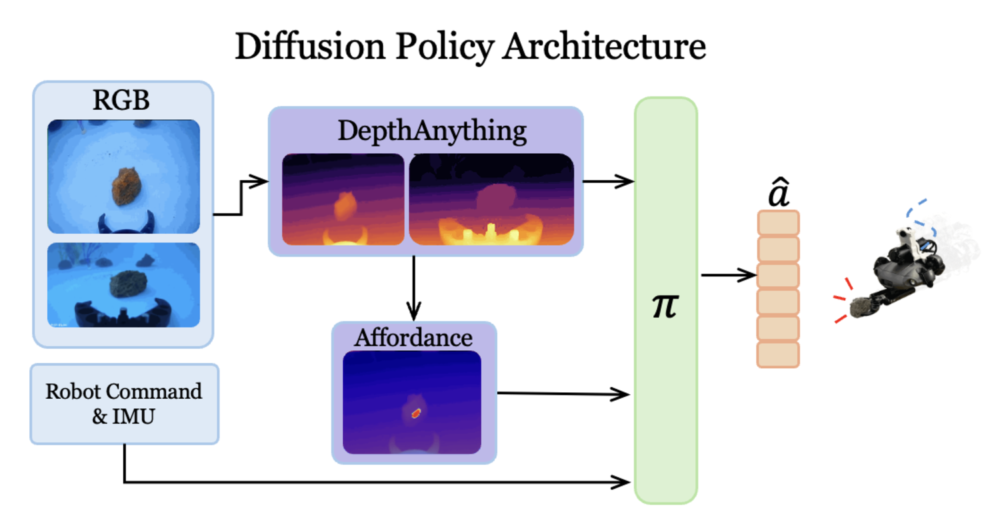
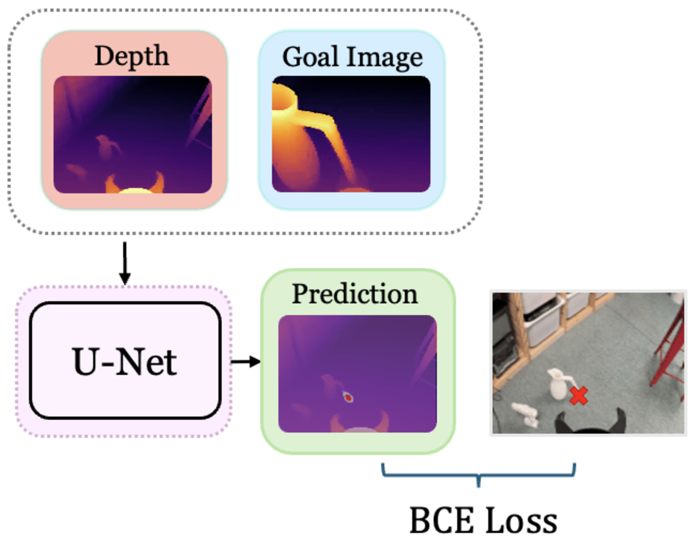
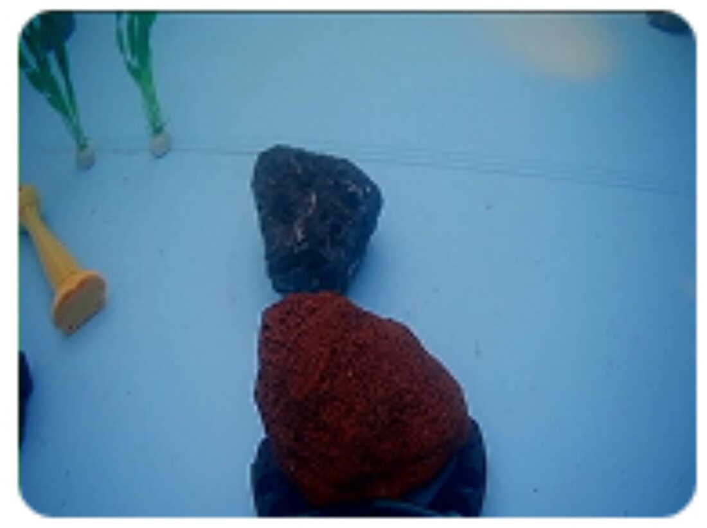
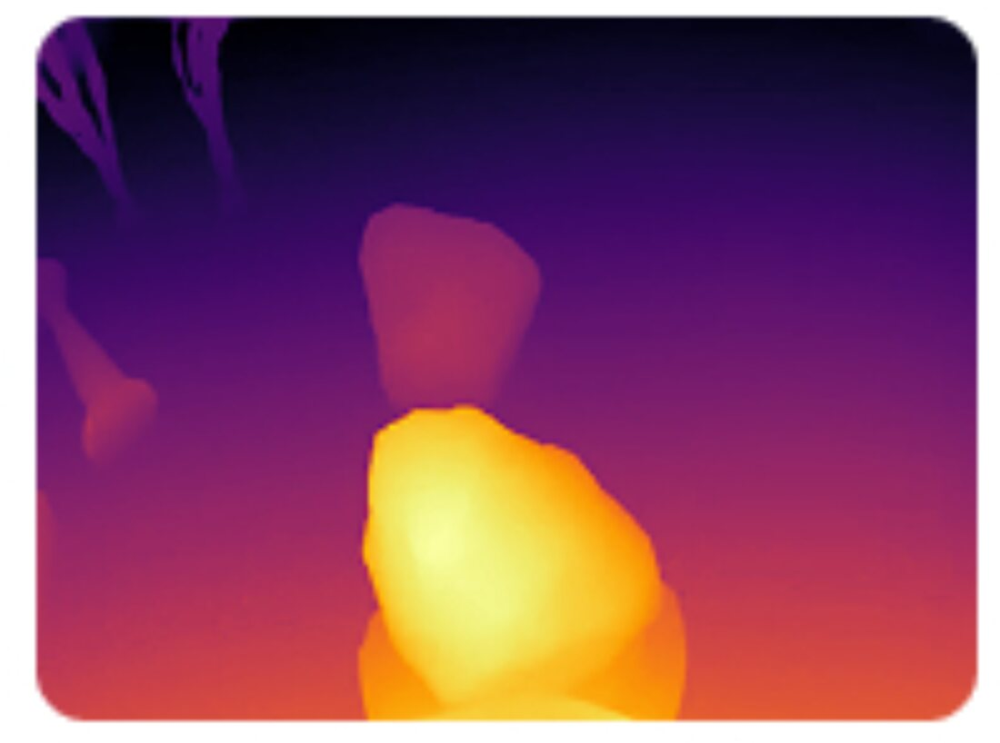
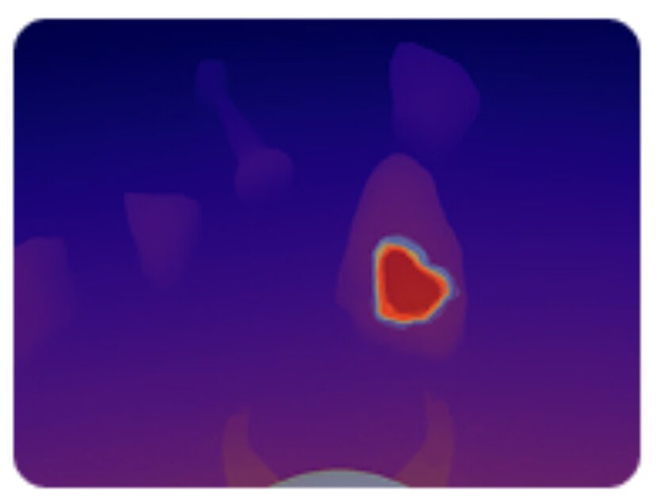
85% in distribution, and it survives a background change.
Twenty grasp trials per condition, in two settings: the distribution the policy was trained on, and the same task with the background changed underneath it.
| Method | Trials | Success |
|---|---|---|
| DP + affordance + depth (ours) | 17 / 20 | 85% |
| DP + RGB | 13 / 20 | 65% |
| Method | Trials | Success |
|---|---|---|
| DP + affordance + depth (ours) | 16 / 20 | 80% |
| DP + depth | 12 / 20 | 60% |
| DP + RGB | 0 / 20 | 0% |
| DP + RGB + affordance + depth | 0 / 20 | 0% |
In distribution the gap is real but not dramatic: 85% against 65%. The background shift is where the argument settles. The RGB policy does not degrade, it stops — twenty failures out of twenty.
The fourth row is worth staring at. Giving the policy RGB in addition to depth and the affordance also scores zero. When RGB is available the policy leans on it, and when the colors change there is nothing underneath.
Hopkins Marine Station, Monterey Bay.
Hopkins Marine Station is Stanford's marine lab on Monterey Bay, and it is where the robot goes when I want to know whether the pool numbers mean anything. I reached out to Jack, one of the divers there, and he helped record the deployment below.
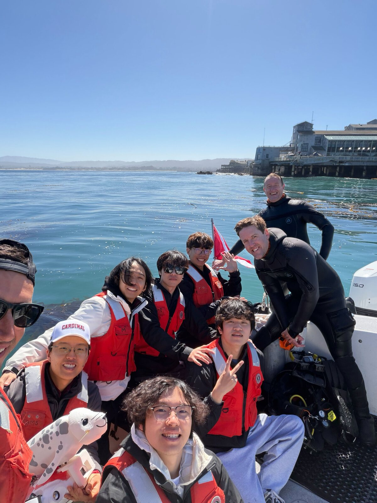
In the pool it worked. In the ocean it did not.
Currents and waves are not a background condition, they are a continuous input. They push the vehicle the entire time it is trying to do something.
In the lab pool there was never a problem. In the last field deployment at Hopkins the same policy failed again and again, and the success rate dropped below 5%.
The robot does not know a disturbance is there. Nothing in its state carries the fact that the water is moving it, so it plans from a view that has already been displaced.
Every 1 Hz update is computed as though the vehicle were still and the water were still, so the bias is identical each time. The robot corrects toward the target, the water carries it back by about as much, and the next update starts from the same error. Replanning faster would not help: the missing quantity is not in the loop at all.
The robot could see the object.
It did not know it was being pushed.
Three problems in the old pipeline, and three fixes.
Each failed for a separate reason, so each needed a separate answer.
RGB to depth
The depth map was inferred from a single monocular camera, so the depth error was about ±10%. On a grasp that is the difference between closing on the object and closing on the water beside it.
Action space
The diffusion policy emitted thruster-level actions. Those overshoot, and the numbers are only meaningful for the QYSEA robot they were learned on, so nothing transfers to another vehicle. Position feedback also arrived only at the 1 Hz policy rate.
Low-level control
A PID controller cannot handle the nonlinear, coupled dynamics of a vehicle moving through water, and more to the point there is nowhere in a PID loop to put an external disturbance even if you had measured one.
The rebuilt loop runs in order: stereo depth, the SAM2-Tiny mask and the IMU give the state; the policy turns state into a relative end-effector trajectory; an MPC turns that into thrust. The disturbance observer sits alongside the MPC.
The bet is that ocean disturbance is not noise. Waves and currents are quasi-periodic, so an observed disturbance should be predictable, and a predicted one lets the controller correct before the displacement rather than after. Whether that holds in real water is untested.
I am still working out how the disturbance observer should actually be used: what to estimate, how far ahead to trust the estimate, and where in the MPC it belongs. None of the rebuilt pipeline has been validated in the field yet.
Waves and currents are not random.
They are quasi-periodic. So they can be predicted.
MPC alone, on simple trajectories.
The observer is not in the loop yet. What is running right now is the model predictive controller by itself, on tests small enough that I can see exactly what failed.
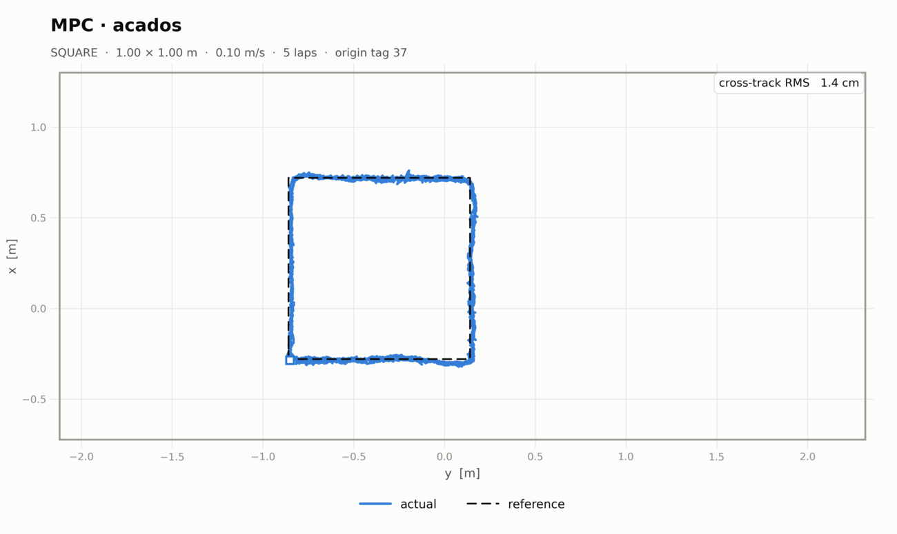
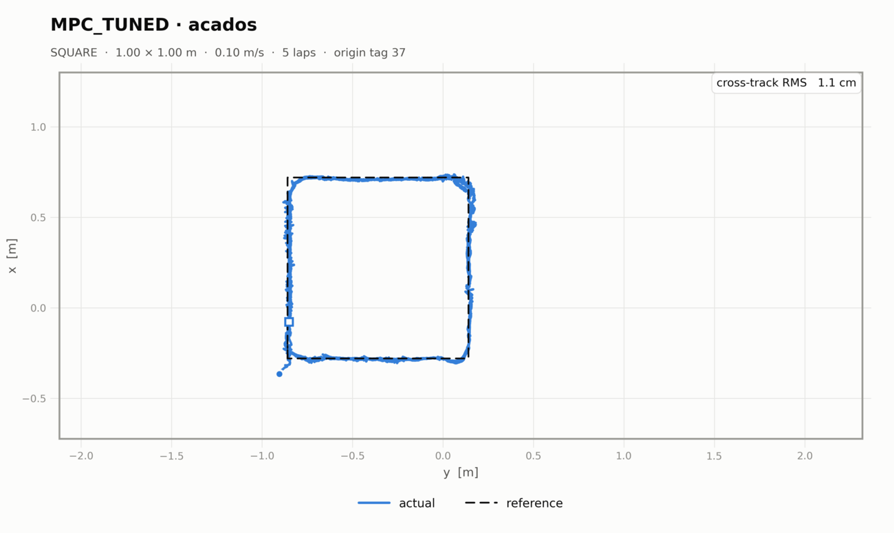
I have also run pose-holding and station-keeping trials over the AprilTag mat. I have not measured a hold duration or a position RMS for those yet, so the square is the only number in this section I would quote.
These numbers flatter the controller. The disturbance was weaker than it looks on camera, and it was a wave, not a current — a wave gives the displacement back, a current does not. How to generate a real current in the tank is still open, so this says the controller tracks well in nearly still water and nothing more.
An ocean I can run a thousand times.
The reinforcement-learning controller is planned, not built. What is being built is the environment I would train it in: a simulation that mimics ocean conditions, so a low-level controller has somewhere to fail cheaply.
Dynamics from Fossen's equations of motion [5], on the open-source BlueROV2 benchmark simulator [7]. Mass properties from CAD; added mass and damping both empirically (DNV) and analytically; drag from a surrogate model trained on OpenFOAM sweeps over random orientation and velocity.
Two disturbance terms. The slow one, the current, is a first-order Gauss-Markov process with low-frequency drift (Fossen 2011, §8.3, eq. 8.152). The fast one, the waves, comes from a JONSWAP spectrum [6]. Three sea states: gentle, moderate, rough.
Others have trained 6-DoF control for thruster-driven underwater vehicles this way [4]. Before I train anything in this environment, the simulated vehicle has to behave enough like the real one that a policy learned inside it is worth carrying outside.
Data collected on land, used under water, with no robot in the loop.
The change in the action space was made to fix overshoot and cross-platform transfer. It also opens something the old pipeline could not reach.
UMI, the Universal Manipulation Interface [3], collects manipulation data without a robot. A person holds a gripper with an action camera on it and does the task by hand — video only, no IMU. The signal that transfers is the camera’s spatial pose: an end-effector-relative trajectory, handed straight to the robot.
The rebuilt policy emits exactly that. Its action is a UMI-style relative pose trajectory rather than thruster commands valid for one vehicle, so it is embodiment-agnostic. Depth made the input medium-agnostic. Together those two run a demonstration recorded on land straight to a robot at depth.
To be precise: this is what the new action space makes possible. No land-to-water zero-shot transfer has been run. That is the next milestone. After grasping, the targets are cable routing and connector mating, both contact-rich.
- H. Li, L. Y. Chung, J. Goler, R. Zhang, X. Xie, H. Ha, S. Song, and M. Cutkosky, "Learning underwater manipulation without underwater teleoperation," Robotics: Science and Systems (RSS), 2026.
- R. Liu, H. Ha, M. Hou, S. Song, and C. Vondrick, "Self-Improving Autonomous Underwater Manipulation," IEEE International Conference on Robotics and Automation (ICRA), Atlanta, 2025.
- C. Chi et al., "Universal Manipulation Interface: In-The-Wild Robot Teaching Without In-The-Wild Robots," Robotics: Science and Systems (RSS), 2024.
- L. Cai, K. Chang, and Y. Girdhar, "Learning to swim: Reinforcement learning for 6-DoF control of thruster-driven autonomous underwater vehicles," ICRA 2025, pp. 11286-11293.
- T. I. Fossen, Handbook of Marine Craft Hydrodynamics and Motion Control. Wiley, 2011.
- DNV GL, Environmental Conditions and Environmental Loads, DNVGL-RP-C205, Aug. 2017.
- M. von Benzon, F. F. Sorensen, E. Uth, J. Jouffroy, J. Liniger, and S. Pedersen, "An Open-Source Benchmark Simulator: Control of a BlueROV2 Underwater Robot," Journal of Marine Science and Engineering, vol. 10, no. 12, p. 1898, 2022.